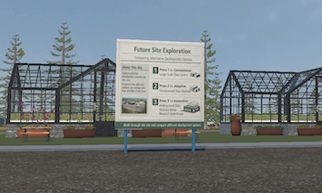
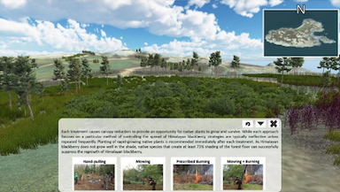
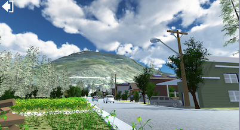

About
I am a PhD candidate in Public Administration at the University of Victoria whose research explores collaborative land-use planning, community engagement, and scenario-based geographic visualization.
Projects
Selected work across landscape visualization, GIS, climate adaptation, knowledge translation, and community-informed planning.

Cumberland District Energy Visualization
Scenario-based visualization exploring how future energy systems can be communicated through interactive landscape visuals.
View project →

Mitlenatch Island Landscape Visualization
A landscape visualization tool developed to support stakeholder engagement and discussions on invasive species management.
View project →

Revelstoke Project
GIS and planning-related work supporting place-based analysis, communication, and decision-making.
View project →
Extreme Heat Preparedness Guide
A public-facing guide designed to support preparedness and risk communication around extreme heat events.
Household Prosperity Report for Colwood
A municipal report using socioeconomic indicators to support local planning, policy analysis, and community well-being.
QualCoder Training Materials
Training resources developed to support qualitative research using open-source analysis tools.
ArcGIS StoryMap
A web-based spatial storytelling project using GIS to communicate place-based information in an accessible format.
Experience
Add experience here
Education
PhD in Public Administration
Research focuses on collaborative land-use planning, participatory systems mapping, and scenario-based landscape visualization for community-informed decision-making.
View Project →MA in Geography
My research focused on the use of landscape visualization as a tool for stakeholder engagement in environmental planning. I developed a visualization tool for Mitlenatch Island, BC, to support discussions on invasive species management and to explore how visual methods can help bridge ecological knowledge, management practice, and community-informed decision-making.
The project involved engagement with BC Parks, First Nations communities, and other interested parties to understand different perspectives on landscape change, planning priorities, and management options. I also conducted qualitative analysis of stakeholder discussions to identify key themes, concerns, and recommendations for more informed and inclusive planning.
View Project →
BA in Geography
Built a strong foundation in GIS, spatial analysis, quantitative methods, and environmental data interpretation, which continues to inform my applied work in scenario analysis, visualization, and planning decision-support.
Publications
Imagining Just and Sustainable Food Futures: Using Interactive Visualizations to Explore the Possible Land Uses and Food Systems Approaches in Revelstoke, Canada
Land, 2024
Geovisualization for Effective Management of Invasive Species: Bridging the Knowing-Doing Gap
Parks, 2024
Fire Hall Response Time Analysis in Seven Municipalities in Greater Vancouver Using GIS: How Population Growth Affects Service Areas
Trail Six, 2013